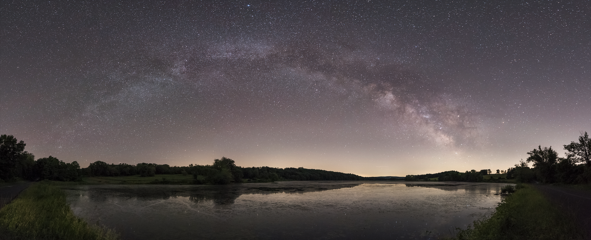

It's January 17, 1994, in Los Angeles at 4:31 a.m. when you feel a rumble wake you from sleep. You get up, but the ground beneath you shakes. You're unable to walk without falling over. You look to your right and see the city lights through your window go out. But something strange appears: a cloud of dust in the sky. You know it's not a dust storm because it's well above the horizon. You call the police because you fear the worst. It's not just you—hundreds of other people across the city reach out to authorities about the same issue.
Who was this cosmic culprit? It was the Milky Way, hidden by light pollution for decades. All this occurred moments after the magnitude-6.7 Northridge earthquake struck. People had become so disconnected that they had forgotten what the night sky looked like - where once only a few dozen stars were visible, now thousands appeared. The confusion, awe, and fear that washed over the residents were unprecedented. It's incredible to think how shocking it was that the stars had become alien to an entire city.
Light pollution is the excess artificial light that washes out the night sky. Street lamps, building exterior and interior lighting, and advertising flood the sky with light that draws a blanket over the stars. While these sources of light are beneficial to our lives, they are misdirected and excessive, which creates a large price to pay. So large, in fact, that approximately 80% of the United States population can't see the Milky Way at night due to light pollution.
In urban areas, only the brightest 10-20 stars are visible on a clear night, compared to several thousand in a truly dark sky. Astronauts aboard the International Space Station have reported seeing fewer stars when flying over light-polluted cities compared to more rural areas. Many children grow up never seeing a star-filled sky, making it harder to care about or connect with space. It rips away an opportunity for curiosity.
If you've never seen the Milky Way in your life, you can still behold its beauty by visiting an International Dark-Sky Association (IDA) park where they have special rules in place to make sure the Milky Way never goes missing. But if you don't want to travel, you can bring the Milky Way to your city. It would be no small feat, but if your city legislature agreed to use warm-colored LEDs instead of blue-white ones, it would reduce light pollution significantly.
Nothing can be compared to the emotional and cultural loss of a starless sky because nothing has ever happened that's even remotely similar. For most of human history, the stars were a guide, a clock, a storybook. Now there are just a few dim dots acting as delegates of the cosmos. When was the last time you looked up at the sky? I'm willing to bet that it's been a while. I honestly don't blame you. There's nothing there. We've forgotten what we lost, and it's time to get it back.